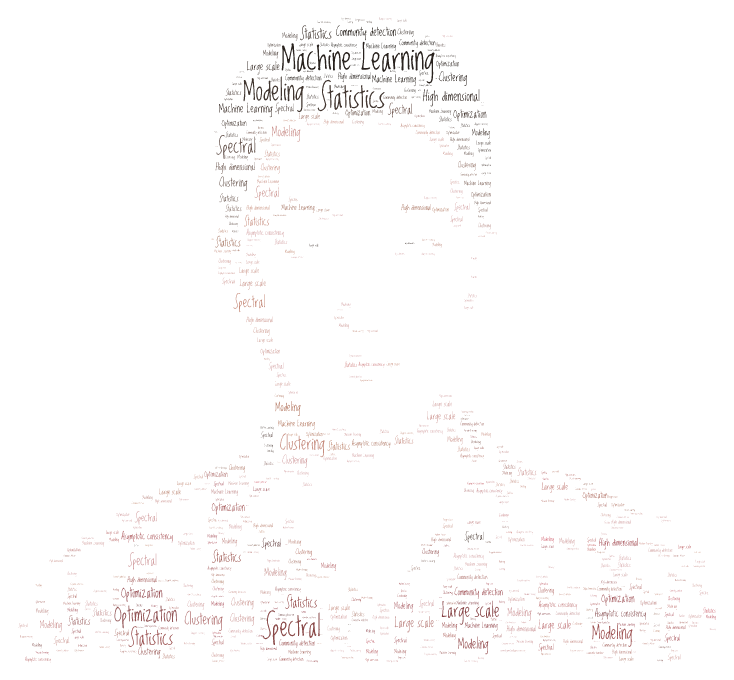

Home
Xueyu Mao (毛学宇)
|  | Applied Scientist |
Biography
I'm currently an Applied Scientist at Amazon. I received my Ph.D. in Computer Science from Department of Computer Science, University of Texas at Austin in 2020, where I was very fortunate to be advised by Prof. Purnamrita Sarkar and co-advised by Prof. Deepayan Chakrabarti. Before that I got my bachelor degree in Information Engineering at School of Electronics, Information and Electrical Engineering, Shanghai Jiao Tong University (SJTU) with highest honor in 2014. I was a member of the Institute of Wireless Communication and Technology under the guidance of Prof. Xinbing Wang at SJTU.
My research interests are in statistical machine learning.
Publications
Consistent Nonparametric Methods for Network Assisted Covariate Estimation. [Paper] [Technical Report] [Spotlight Talk] [poster] [BibTeX]
Xueyu Mao, Deepayan Chakrabarti, and Purnamrita Sarkar,
in International Conference on Machine Learning, 2021.
Overlapping Clustering Models, and One (class) SVM to Bind Them All. [arXiv][Spotlight Talk] [code] [poster] [BibTeX]
Xueyu Mao, Purnamrita Sarkar, and Deepayan Chakrabarti,
in Neural Information Processing Systems, 2018. (Spotlight presentation)
Estimating Mixed Memberships with Sharp Eigenvector Deviations. [arXiv] [Data & Code] [BibTeX]
Xueyu Mao, Purnamrita Sarkar, and Deepayan Chakrabarti,
in Journal of the American Statistical Association, Theory and Methods (JASA-T&M).
- Contributed Talk, NIPS Workshop on Advances in Modeling and Learning Interactions from Complex Data, 2017.
On Mixed Memberships and Symmetric Nonnegative Matrix Factorizations. [arXiv] [Talk (pwd:icml2017)] [Data & Code] [BibTeX]
Xueyu Mao, Purnamrita Sarkar, and Deepayan Chakrabarti,
in International Conference on Machine Learning, 2017.
- Poster presentation, Nonparametric Statistics Workshop, 2016.
Industrial Applications
Training Streaming Factorization Machines with Alternating Least Squares. [PDF]
Xueyu Mao, Saayan Mitra, Sheng Li
in ACM SIGIR, 2019.
Feature Selection for FM-Based Context-Aware Recommendation Systems. [PDF]
Xueyu Mao, Saayan Mitra, Viswanathan Swaminathan
in IEEE ISM, 2017.
Undergraduate Research
The collocation of measurement points in large open indoor environment. [PDF] [Technical Report] [Slides]
Kaikai Sheng, Zhicheng Gu, Xueyu Mao, Xiaohua Tian, Weijie Wu, Xiaoying Gan, and Xinbing Wang,
in IEEE INFOCOM, 2015.
Answer Inference for Crowdsourcing based Scoring. [PDF]
Kaikai Sheng, Zhicheng Gu, Xueyu Mao, Xiaohua Tian, Xiaoying Gan, and Xinbing Wang,
in IEEE GLOBECOM, 2014.
Working Experience
Applied Scientist, Amazon, Seattle, 2020 - Present
Research Intern, Cognitive Computing Lab, Baidu Research, Beijing, Summer 2019
Data Science Research Intern, BigData Experience Lab, Adobe Research, San Jose, Summer 2017
(Research) Data Scientist Intern, BigData Experience Lab, Adobe Research, San Jose, Summer 2016
Teaching Experience
Teaching Assistant, CS 363D: Introduction to Data Mining, UT Austin, Spring 2020
Teaching Assistant, CS 329E: Elements of Data Analytics, UT Austin, Fall 2019
Teaching Assistant, CS 378H: Introduction to Data Mining: Honors, UT Austin, Spring 2019
Teaching Assistant, CS 363D: Introduction to Data Mining, UT Austin, Fall 2018
Teaching Assistant, SDS 383C: Statistical Modeling I, UT Austin, Fall 2017
Teaching Assistant, CS 378H: Introduction to Data Mining: Honors, UT Austin, Spring 2017
Teaching Assistant, CS 363D: Introduction to Data Mining, UT Austin, Spring 2016
Teaching Assistant, CS 302: Computer Fluency, UT Austin, Fall 2015
Teaching Assistant, CS 363D/SDS 358: Statistical Learning and Data Mining, UT Austin, Spring 2015
Teaching Assistant, CS 302: Computer Fluency, UT Austin, Fall 2014
Honors and Awards
SDS Graduate Fellow, UT Austin (2017)
Graduate School Professional Development Awards, UT Austin (2017, 2018)
Travel Awards (ICML 2017, NeurIPS 2018, UTCS)
NSF travel support for Nonparametric Statistics Workshop (2016)
Shanghai Outstanding Graduate (2014)
National Scholarship of China (2011, 2012, 2013)
Academic Excellence Scholarship (First-class), SJTU (2011, 2013)
Academic Excellence Scholarship (Second-class), SJTU (2012)
Merit Student, SJTU (2011)
Pronunciation
Pronunciation of my name on Youtube: Xue (sh EW eh), Yu (ü), Mao (m ow)